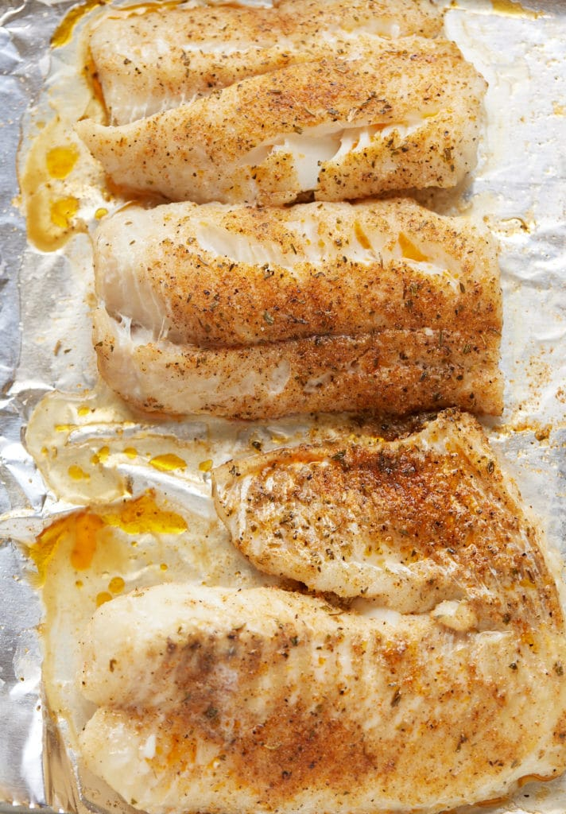

Oven Baked Fish

This easy oven-baked fish recipe is so effortless to make; it’s the perfect option after a long and busy day. It takes minutes to prep, and it’s quick to cook so that you can get a tasty, healthy, and filling dinner on the table in no time.
Ingredients
How To Cook
- Preheat oven to 375 degrees Fahrenheit.
- Dry fish filets with a paper towel or a clean kitchen towel. Place on a large sheet pan and rub the oil over the fish filets, covering both sides.
- Sprinkle the filets with the seasoning.
- Place in the preheated oven for 15-20 minutes, until the fish is flaky and reaches an internal temperature of 145 degrees Fahrenheit.
Enjoy!